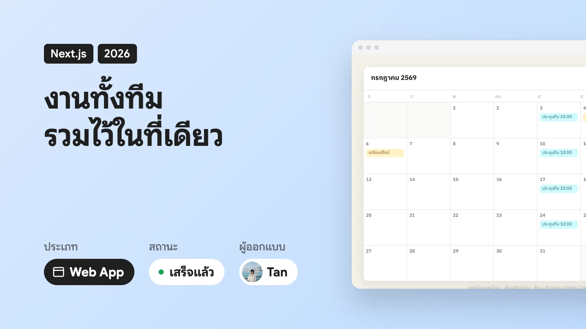
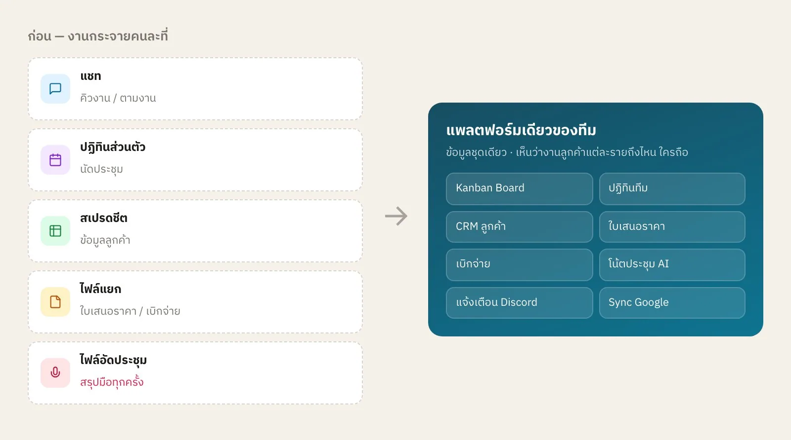
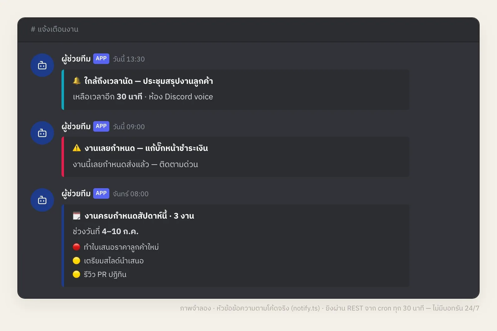
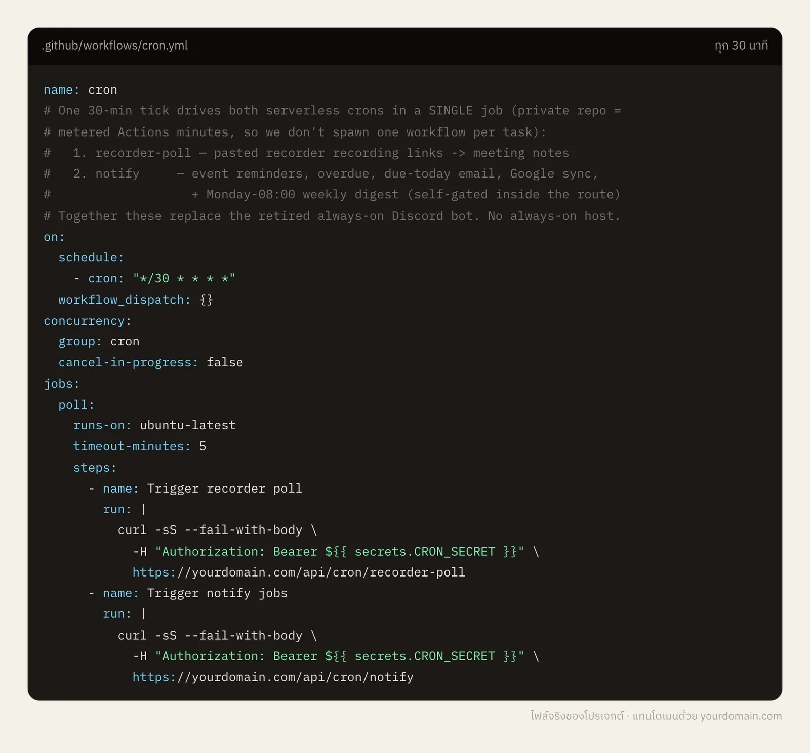
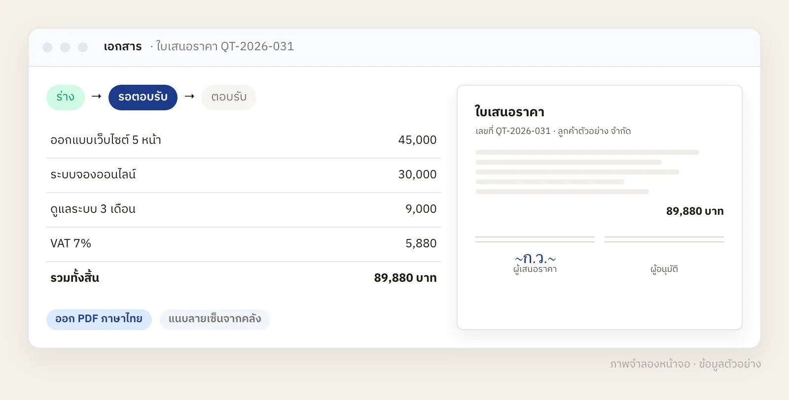
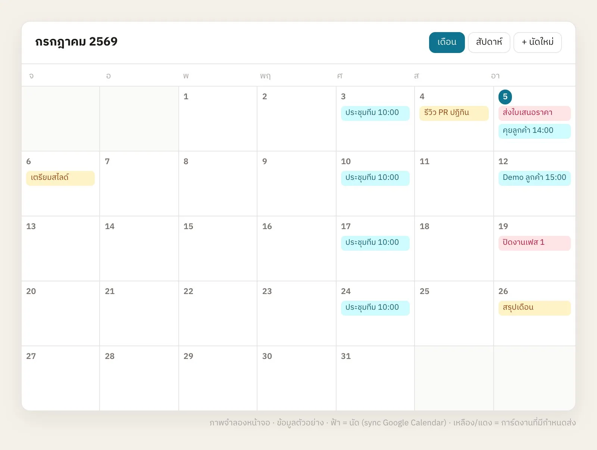
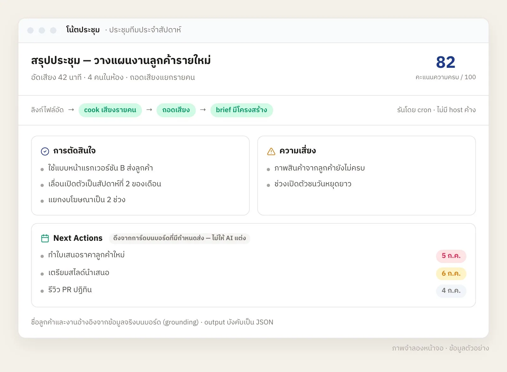
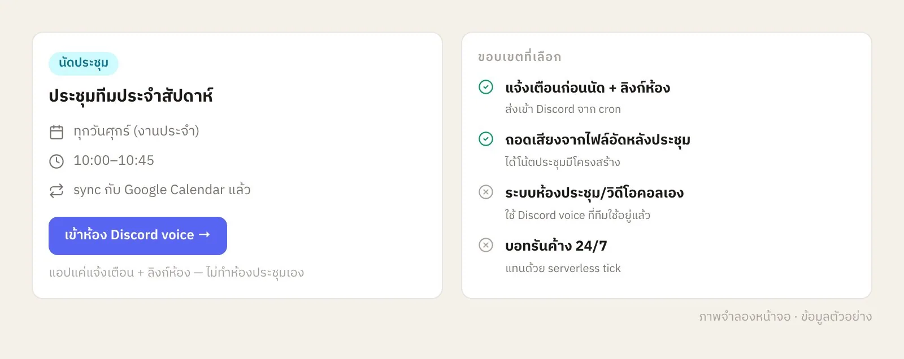
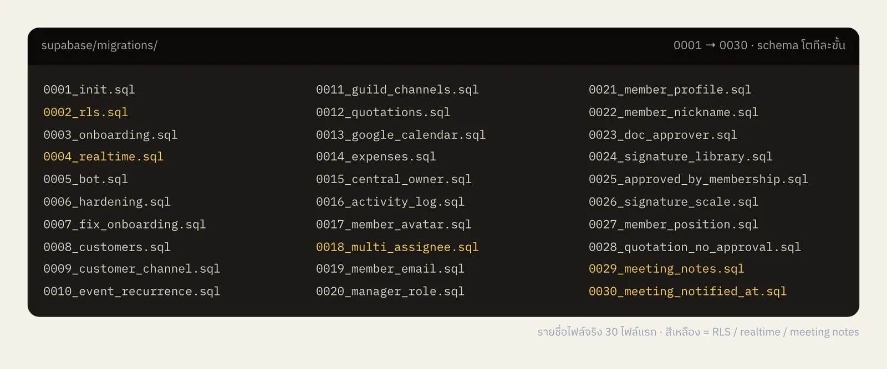

แพลตฟอร์มบริหารงานภายในทีม
แพลตฟอร์มบริหารงานภายในทีม ที่รวมบอร์ด ปฏิทิน CRM เอกสาร และโน้ตประชุม AI ไว้ในที่เดียว — สร้างบน Next.js 16 + Supabase ขับ automation ด้วย serverless cron ล้วน ไม่มี host รัน 24/7 และออกแบบ multi-tenant ตั้งแต่ migration แรกเพื่อต่อยอดเป็น product

เครื่องมือภายในของทีม ที่รวม Kanban board, ปฏิทิน, CRM ลูกค้า, ใบเสนอราคา/เบิกจ่าย และโน้ตประชุม AI ไว้ในแอปเดียว — สร้างบน Next.js 16 + Supabase (RLS) และขับ automation ด้วย serverless cron ล้วน ไม่มี host รัน 24/7 ออกแบบ multi-tenant ตั้งแต่ migration แรกเพื่อต่อยอดเป็น product
ปัญหาที่เจอ
งานของทีมกระจายอยู่หลายเครื่องมือ — ทำไมการบริหารงานประจำวันถึงยังยุ่งและตกหล่นบ่อย?

งานทีมกระจายอยู่คนละที่ — คิวงานคุยกันใน chat, นัดประชุมอยู่ในปฏิทินส่วนตัว, ข้อมูลลูกค้าอยู่ในสเปรดชีต, สรุปประชุมทำมือทุกครั้ง ไม่มีจุดเดียวที่เห็นภาพรวมว่าใครทำอะไรถึงไหน งานเลยตกหล่น ตามยาก และซ้ำซ้อน
งานกระจายหลายเครื่องมือ ไม่มี single source of truth
บอร์ดงานอยู่ใน chat, นัดอยู่ในปฏิทินส่วนตัว, ลูกค้าอยู่ในชีต — จะรู้ว่างานลูกค้ารายหนึ่งถึงไหนต้องเปิดหลายที่ประกอบเอง
บอทแจ้งเตือนต้องเปิดเครื่องรัน 24/7
ระบบเตือนงาน/ประชุมแบบเดิมต้องมี process ค้างตลอดเวลา — เปลือง host, ล่มแล้วเงียบไม่มีใครรู้ ดูแลลำบาก
สรุปประชุมทำมือทุกครั้ง
ทีมอัดเสียงประชุมไว้ แต่กว่าจะมีคนมานั่งฟังย้อน ถอด แล้วสรุปเป็นบันทึก เสียเวลามาก และคุณภาพไม่คงที่ในแต่ละครั้ง
ใบเสนอราคา/เบิกจ่ายทำมือ ไม่มี flow อนุมัติ
เอกสารทำในไฟล์แยก ไล่ถามกันเองว่าใครอนุมัติ เวอร์ชันปนกัน ไม่มีสถานะชัดว่าอันไหนร่าง อันไหนอนุมัติแล้ว
อยากต่อยอดขายลูกค้า แต่ระบบผูกกับบริษัทเดียว
ถ้าสร้างเป็นเครื่องมือใช้ภายในตรงๆ โดยไม่คิดเผื่อหลายองค์กร วันหนึ่งจะเอาไปขายลูกค้าต้องรื้อ data model ใหม่ทั้งหมด
วิธีแก้ปัญหา
รวมทุกงานไว้ที่เดียว แล้วให้ automation ทำงานน่าเบื่อแทน — โดยไม่ต้องเลี้ยง server ไว้ตลอดเวลา

รวมทุกงานไว้แพลตฟอร์มเดียว
บอร์ด, ปฏิทิน, CRM ลูกค้า, เอกสาร และโน้ตประชุม ใช้ข้อมูลชุดเดียวกัน — เปิดหน้าเดียวเห็นว่างานลูกค้าแต่ละรายถึงไหน ใครถือ
ทิ้ง host 24/7 เปลี่ยนเป็น serverless cron
GitHub Actions ยิง /api/cron/* บน Vercel ทุก 30 นาที — งานเตือน/แจ้งเป็น tick แบบ stateless ไม่มี process ค้าง RAM ไม่มีเครื่องต้องเลี้ยง
pipeline โน้ตประชุมอัตโนมัติ
วางลิงก์ไฟล์อัดเสียงประชุม → ระบบ cook เสียงรายคน → ถอด → สรุปเป็น brief มีโครงสร้าง (การตัดสินใจ/สิ่งที่ต้องทำ/ความเสี่ยง) + คะแนนความครบถ้วน
เอกสารมี flow อนุมัติจริง
ใบเสนอราคา/เบิกจ่าย เดินสถานะ ร่าง → รออนุมัติ → อนุมัติ/ปฏิเสธ ตาม role ผู้ใช้ พร้อมออก PDF ภาษาไทย และคลังลายเซ็น
ออกแบบ multi-tenant ตั้งแต่ migration แรก
ทุกตารางมี org_id + Row Level Security กันข้ามองค์กรตั้งแต่วันแรก — v1 รันบริษัทเดียว แต่พร้อมกลายเป็น product ขายลูกค้าโดยไม่ต้องรื้อ
วิธีทำงาน — 4 จังหวะ
หัวใจสถาปัตยกรรม: ไม่มี host รัน 24/7 — ทุก automation ขับด้วย cron tick แบบ stateless

ทีมทำงานบนแพลตฟอร์ม
ลากการ์ดบนบอร์ด ตั้งนัดในปฏิทิน วางลิงก์ไฟล์อัดประชุม
Cron tick ทุก 30 นาที
GitHub Actions ยิง /api/cron/* บน Vercel — ไม่มี host ค้าง
ประมวลผลเป็นชุด
เตือนงานใกล้ครบ/เลยกำหนด, sync Google, cook + ถอดเสียงประชุม
ส่งออกอัตโนมัติ
แจ้ง Discord/อีเมล + สรุปภาพรวมรายสัปดาห์ทุกเช้าจันทร์
Tech Stack & Architecture
Bun monorepo · Next.js 16 บน Vercel · Supabase — ไม่มี backend เป็นของตัวเอง ไม่มีเครื่องรันตลอดเวลา

Next.js 16 (App Router) + Server Actions — เขียน mutation ฝั่ง server ได้ตรงๆ ไม่ต้องปั้น REST เอง · Supabase + RLS ให้ auth, realtime และความปลอดภัยระดับแถวมาในตัว — บังคับ multi-tenant ที่ชั้นฐานข้อมูล · Bun workspaces monorepo — packages/shared เป็นแหล่งเดียวของ domain vocabulary + query builders ใช้ร่วมกันระหว่างเว็บกับ cron · Serverless cron (GitHub Actions → Vercel) แทนบอทที่ต้องรัน 24/7 — stateless, ไม่มีเครื่องต้องเลี้ยง
สิ่งที่สร้าง — 8 ความสามารถหลัก
ครบ loop ของการบริหารงานทีม ตั้งแต่คิวงานถึงเอกสารและบันทึกประชุม

Kanban Board
ลากจัดคิว 5 คอลัมน์ + sync realtime + ระดับความสำคัญ (สูง/กลาง/ต่ำ) + มอบหมายหลายคนต่อการ์ด
ปฏิทินทีม
มุมมองเดือน/สัปดาห์ + งานประจำ (recurrence) + ผูกลิงก์ห้อง Discord ของแต่ละนัด
CRM ลูกค้า
จัดสถานะ มุ่งหวัง/ประจำ/พัก แยกนิติบุคคล-บุคคล + ผูกช่อง Discord ต่อลูกค้าแต่ละราย
ใบเสนอราคา
เดินสถานะ ร่าง→รอตอบรับ→ตอบรับ + ออก PDF ภาษาไทย + คลังลายเซ็นแนบท้าย
เบิกจ่าย
แยกประเภทค่าใช้จ่าย + เติมอัตราหัก ณ ที่จ่ายอัตโนมัติ + flow อนุมัติตาม role ผู้ใช้
โน้ตประชุม AI
ลิงก์ไฟล์อัด → ถอดเสียงรายคน → brief มีโครงสร้าง (ตัดสินใจ/สิ่งที่ต้องทำ/ความเสี่ยง) + คะแนนความครบ
แจ้งเตือน Serverless
เตือน Discord/อีเมลงานใกล้ครบ & เลยกำหนด + สรุปภาพรวมรายสัปดาห์ ขับด้วย cron ไม่มี host
Sync Google Calendar
เชื่อม OAuth สองทาง นัดในแอป ↔ Google + activity log ทุกการเปลี่ยนแปลง + changelog "มีอะไรใหม่"
หน้าตาบอร์ด
คิวงานทั้งทีมในหน้าจอเดียว — ลากการ์ดข้ามคอลัมน์ อัปเดตสดให้ทุกคนเห็นพร้อมกัน

Hack กับปัญหา
6 โจทย์วิศวกรรมที่ต้องคิดทางแก้เอง — serverless constraint + API ที่ไม่มีเอกสาร + multi-tenant

ฆ่าบอทที่ต้องรัน 24/7
ระบบเตือน/แจ้งเดิมต้องมี process ค้างตลอด — เปลือง host และล่มเงียบ อยากได้ automation ที่ไม่มีเครื่องต้องเลี้ยง
ถอดประชุมจากลิงก์อัดที่ไม่มี public API
ไฟล์อัดประชุมอยู่บนบริการภายนอกที่ไม่เปิด API ทางการ — และ serverless function ลง ffmpeg ไม่ได้ ทำ audio processing หนักๆ ไม่ได้
fflate — ไม่ต้องพึ่ง ffmpeg เลย รันบน serverless ได้กัน AI มโนชื่อลูกค้า/ข้อสรุป
ให้ LLM สรุปประชุมดิบๆ มันเดาชื่อลูกค้าและ project ที่ไม่มีจริง — สรุปสวยแต่เชื่อไม่ได้
ลากการ์ดแล้วต้องไม่กระตุก/ชนกัน
บอร์ดหลายคนใช้พร้อมกัน — ลากการ์ดแล้วรอ round-trip ถึงขยับ = หน่วง และถ้าสองคนขยับพร้อมกันลำดับพัง
ยิง Discord จาก serverless โดยไม่มี gateway
discord.js ปกติต้องเปิด gateway (websocket ค้าง) — ขัดกับโมเดล serverless ที่ function จบแล้วดับ
POST /channels/:id/messages) ไม่พึ่ง discord.js เลย รันจาก cron ได้สบาย + ออกแบบให้ fail soft (log ไม่ throw) ช่องเดียวพังไม่ล้มทั้ง batchเครื่องมือภายในที่พร้อมกลายเป็น product
ถ้าสร้างแบบผูกบริษัทเดียว วันหนึ่งจะขายลูกค้าต้องรื้อ data model — แต่ทำ multi-tenant เต็มรูปตั้งแต่แรกก็ over-engineer สำหรับ v1
org_id + Row Level Security ทุกตารางตั้งแต่ migration ต้นๆ (v1 รัน org เดียว) — schema ค่อยๆ โตแบบ incremental ผ่าน migration หลายสิบไฟล์ ไม่ big-bang จึงพร้อมขยายเป็นหลายองค์กรโดยไม่ต้องรื้อDesign Decision ที่ตั้งใจเลือก
ขอบเขตที่จงใจ "ไม่ทำ" ช่วยให้เครื่องมือเล็ก คม และดูแลง่าย

แพลตฟอร์มภายในทีม จงใจไม่พยายามเป็นทุกอย่าง — ไม่ทำห้องประชุมเอง (ใช้ Discord voice แอปแค่แจ้งเตือน/ลิงก์), ไม่มี host รัน 24/7 (serverless ล้วน), ไม่สร้าง design system ใหม่ (reuse จาก แพลตฟอร์มภายในทีม Hub) ขอบเขตที่คมทำให้ implement ตรงและ maintain ง่าย
ไม่ทำห้องประชุมเอง
ประชุมใช้ Discord voice — แอปแค่แจ้งเตือน/ลิงก์
ไม่มี host รัน 24/7
automation เป็น serverless cron ล้วน ไม่มีเครื่องเลี้ยง
ไม่สร้าง design system ใหม่
reuse tokens/ฟอนต์/คอมโพเนนต์จาก แพลตฟอร์มภายในทีม Hub
v1 รัน org เดียว
แต่โครง multi-tenant พร้อมขยายโดยไม่ต้องรื้อ
Knowledge Domain ที่แข็งขึ้น
5 พื้นที่ความรู้ที่ระดับเราขยับขึ้นจริงจากการทำโปรเจกต์นี้

ออกแบบ automation ที่แต่เดิมต้องมีบอทรัน 24/7 ให้กลายเป็น cron tick แบบ stateless — รวมหลายงานใน job เดียวเพื่อประหยัด Actions minutes, ทำ time-window self-gating ด้วยเลขคณิต timezone (เขตไทย = UTC+7 คงที่). บทเรียน: งานที่ "ต้องรันตลอด" ส่วนใหญ่จริงๆ แค่ต้อง "รันเป็นจังหวะ" ก็พอ
วาง org_id + Row Level Security ทุกตารางตั้งแต่ต้น เพื่อกันข้ามองค์กรที่ระดับ DB ไม่ใช่แค่ที่ application — และวิวัฒน์ schema แบบ incremental ผ่าน migration หลายสิบไฟล์. บทเรียน: ตัดสินใจ tenancy ตั้งแต่แถวแรกของ schema ถูกกว่ารื้อทีหลังมาก
บังคับ structured JSON output, ground prompt ด้วยข้อมูลจริง (บอร์ด/ลูกค้า) เพื่อฆ่า hallucination, แยกส่วนที่เป็น "ข้อเท็จจริง" (roll up จากการ์ด) ออกจากส่วนที่ให้ AI สรุป, และทำ explainable score ที่อธิบายได้ว่าคะแนนมาจากไหน. บทเรียน: AI ที่เชื่อถือได้เกิดจากการจำกัดขอบเขตให้มัน ไม่ใช่ปล่อยอิสระ
แกะ endpoint ของบริการอัดเสียงที่ไม่มีเอกสารจากการ inspect หน้าดาวน์โหลด, จัดการ zip ใน memory ด้วย fflate แทน ffmpeg ที่ลงบน serverless ไม่ได้, และยิง Discord ผ่าน REST ตรงแทน gateway. บทเรียน: ข้อจำกัดของ runtime มักบังคับให้เจอทางแก้ที่เบาและตรงกว่าเดิม
ใช้ Bun workspaces แยก apps/web กับ packages/shared ที่รวม domain vocabulary, query builders, และ business logic ใช้ร่วมกันทั้งเว็บและ cron — label/สถานะ/สีทั้งหมดมาจากที่เดียว ไม่ hardcode ซ้ำ. บทเรียน: โค้ดที่ต้อง "ตรงกันเสมอ" ต้องอยู่ที่เดียว ไม่ใช่ก๊อปไปหลายที่